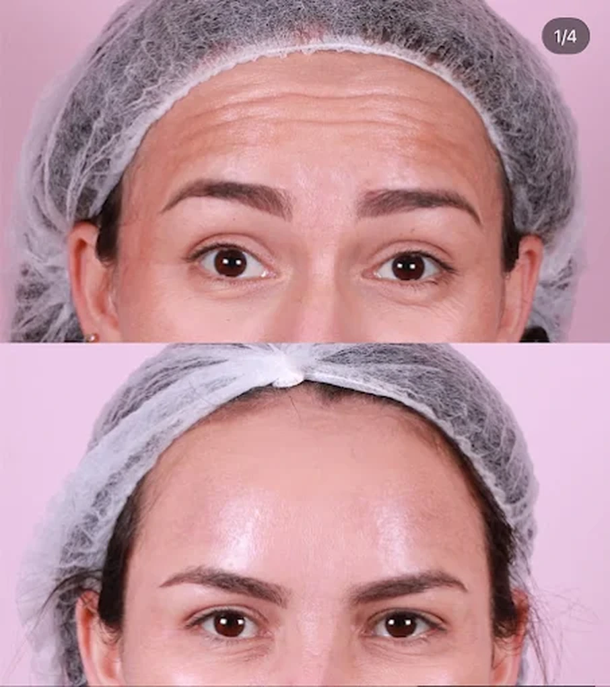
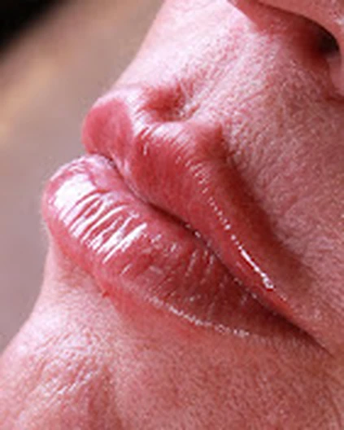
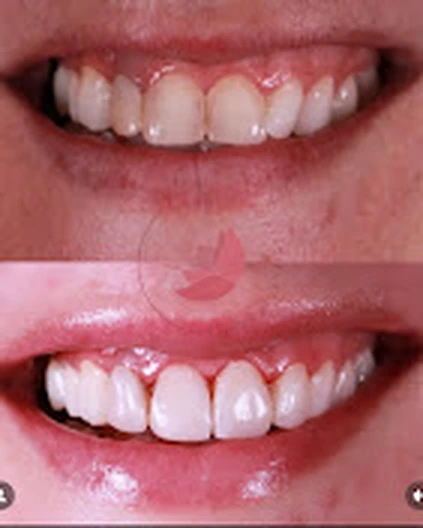
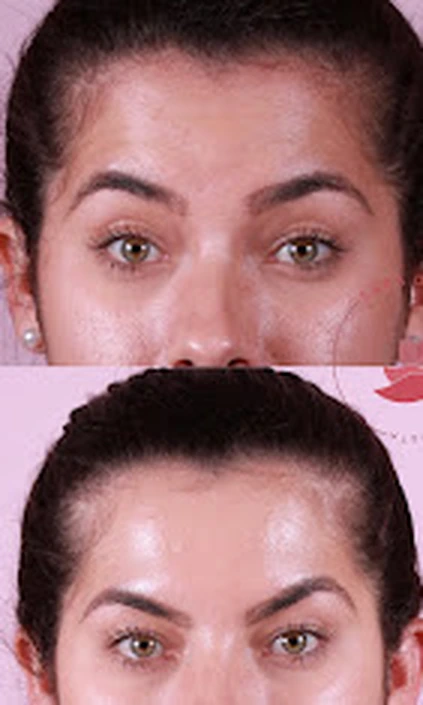
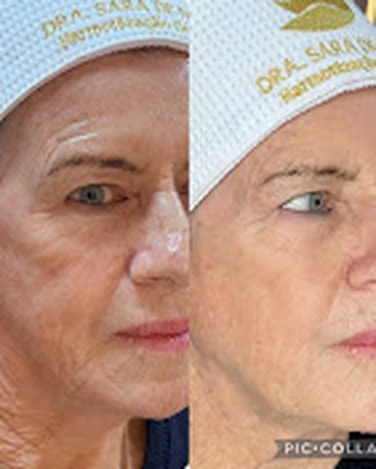
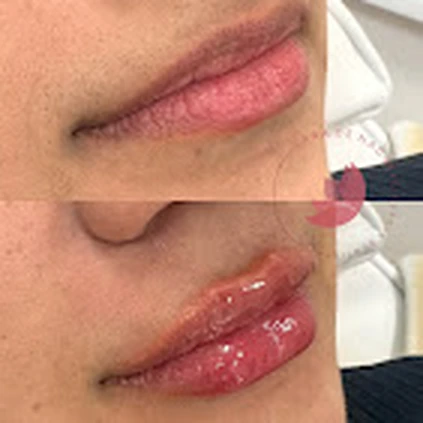
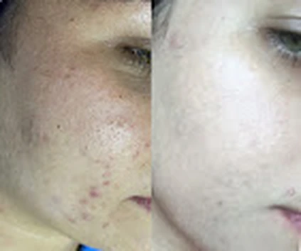

Resultados
Registros que mostram casos individuais.
Esta galeria usa o acervo fornecido para a demonstração. Antes da publicação oficial, todas as imagens e autorizações devem ser confirmadas pela profissional.


Região frontal

Lábios

Sorriso

Olhar

Face

Lábios

PeleResultados variam de pessoa para pessoa. As fotografias não representam garantia nem promessa de resultado. Publicação condicionada à validação profissional e autorização de uso de imagem.
Quer entender o que pode fazer sentido para você?
Uma avaliação individual é o caminho adequado para discutir possibilidades e limites.
Agendar avaliação →